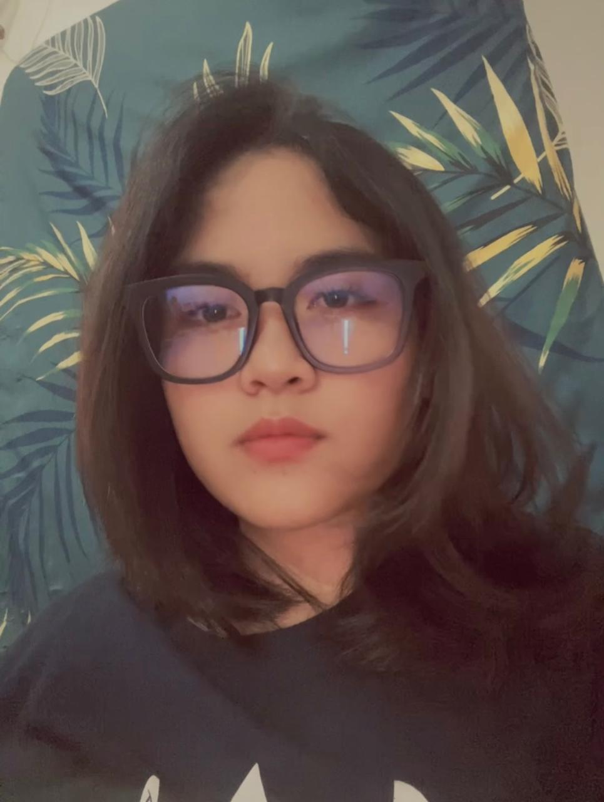

Profil Mahasiswa
Tentang saya
Perkenalkan nama saya Agnes Tasya Purba. Saya adalah mahasiswa Teknik Rekayasa Robotika semester 5 di Politeknik Negeri Batam.
Saya memiliki minat dalam bidang robotika. Hobi saya adalah bernyanyi dan mendengarkan musik.
Pendidikan
Saya sedang menempuh pendidikan D4 di Politeknik Negeri Batam.